本章目录
- This chapter covers
- 2.1 Understanding word embeddings
- 2.2 Tokenizing text
- 2.3 Converting tokens into token IDs
- 2.4 Adding special context tokens
- 2.5 Byte pair encoding
- Exercise 2.1 Byte pair encoding of unknown words
- 2.6 Data sampling with a sliding window
- Exercise 2.2 Data loaders with different strides and context sizes
- 2.7 Creating token embeddings
- 2.8 Encoding word positions
- Summary
Working with text data#
This chapter covers#
So far, we’ve covered the general structure of large language models (LLMs) and learned that they are pretrained on vast amounts of text. Specifically, our focus was on decoder-only LLMs based on the transformer architecture, which underlies the models used in ChatGPT and other popular GPT-like LLMs.
During the pretraining stage, LLMs process text one word at a time. Training LLMs with millions to billions of parameters using a next-word prediction task yields models with impressive capabilities. These models can then be further finetuned to follow general instructions or perform specific target tasks. But before we can implement and train LLMs, we need to prepare the training dataset, as illustrated in figure 2.1.
17
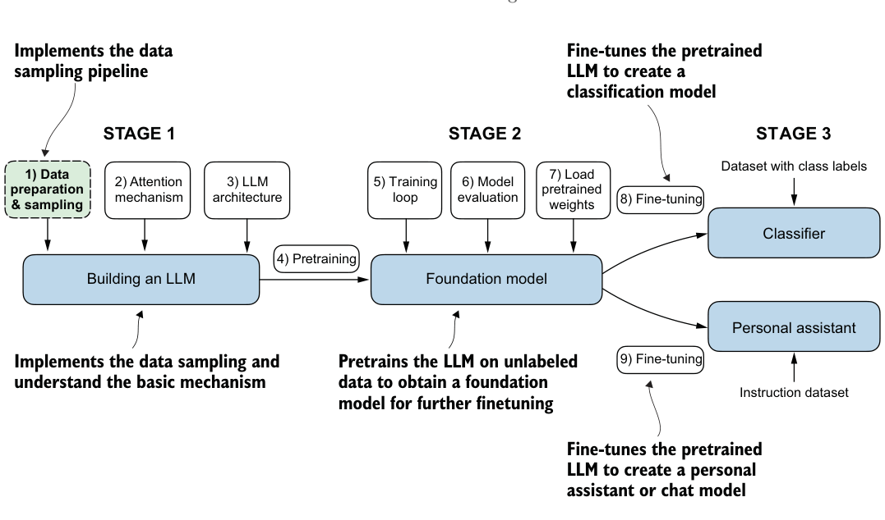
You’ll learn how to prepare input text for training LLMs. This involves splitting text into individual word and subword tokens, which can then be encoded into vector representations for the LLM. You’ll also learn about advanced tokenization schemes like byte pair encoding, which is utilized in popular LLMs like GPT. Lastly, we’ll implement a sampling and data-loading strategy to produce the input-output pairs necessary for training LLMs.
2.1 Understanding word embeddings#
Deep neural network models, including LLMs, cannot process raw text directly. Since text is categorical, it isn’t compatible with the mathematical operations used to implement and train neural networks. Therefore, we need a way to represent words as continuous-valued vectors.
The concept of converting data into a vector format is often referred to as embedding. Using a specific neural network layer or another pretrained neural network model, we can embed different data types—for example, video, audio, and text, as illustrated in figure 2.2. However, it’s important to note that different data formats require distinct embedding models. For example, an embedding model designed for text would not be suitable for embedding audio or video data.
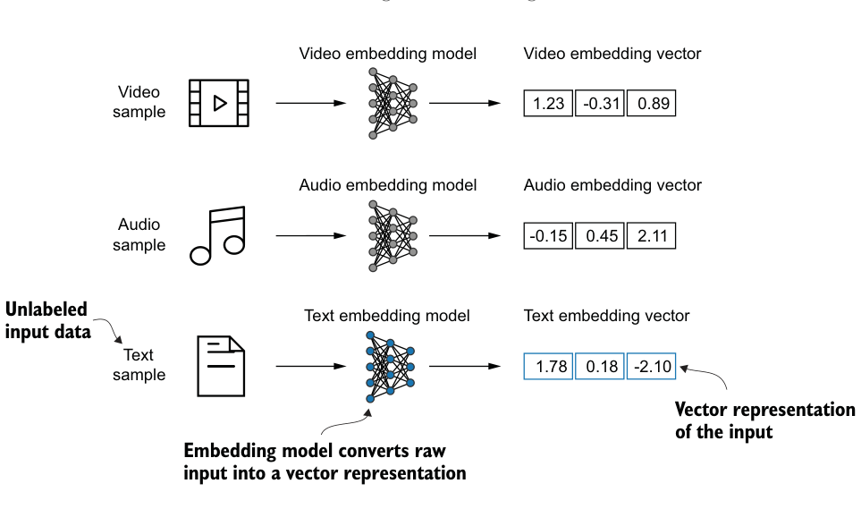
At its core, an embedding is a mapping from discrete objects, such as words, images, or even entire documents, to points in a continuous vector space—the primary purpose of embeddings is to convert nonnumeric data into a format that neural networks can process.
While word embeddings are the most common form of text embedding, there are also embeddings for sentences, paragraphs, or whole documents. Sentence or paragraph embeddings are popular choices for retrieval-augmented generation. Retrievalaugmented generation combines generation (like producing text) with retrieval (like searching an external knowledge base) to pull relevant information when generating text, which is a technique that is beyond the scope of this book. Since our goal is to train GPT-like LLMs, which learn to generate text one word at a time, we will focus on word embeddings.
Several algorithms and frameworks have been developed to generate word embeddings. One of the earlier and most popular examples is the Word2Vec approach. Word2Vec trained neural network architecture to generate word embeddings by predicting the context of a word given the target word or vice versa. The main idea behind Word2Vec is that words that appear in similar contexts tend to have similar meanings. Consequently, when projected into two-dimensional word embeddings for visualization purposes, similar terms are clustered together, as shown in figure 2.3.
Word embeddings can have varying dimensions, from one to thousands. A higher dimensionality might capture more nuanced relationships but at the cost of computational efficiency.
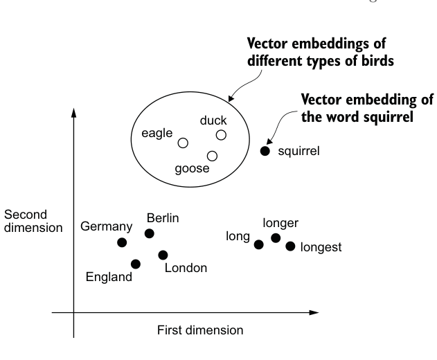
While we can use pretrained models such as Word2Vec to generate embeddings for machine learning models, LLMs commonly produce their own embeddings that are part of the input layer and are updated during training. The advantage of optimizing the embeddings as part of the LLM training instead of using Word2Vec is that the embeddings are optimized to the specific task and data at hand. We will implement such embedding layers later in this chapter. (LLMs can also create contextualized output embeddings, as we discuss in chapter 3.)
Unfortunately, high-dimensional embeddings present a challenge for visualization because our sensory perception and common graphical representations are inherently limited to three dimensions or fewer, which is why figure 2.3 shows twodimensional embeddings in a two-dimensional scatterplot. However, when working with LLMs, we typically use embeddings with a much higher dimensionality. For both GPT-2 and GPT-3, the embedding size (often referred to as the dimensionality of the model’s hidden states) varies based on the specific model variant and size. It is a tradeoff between performance and efficiency. The smallest GPT-2 models (117M and 125M parameters) use an embedding size of 768 dimensions to provide concrete examples. The largest GPT-3 model (175B parameters) uses an embedding size of 12,288 dimensions.
Next, we will walk through the required steps for preparing the embeddings used by an LLM, which include splitting text into words, converting words into tokens, and turning tokens into embedding vectors.
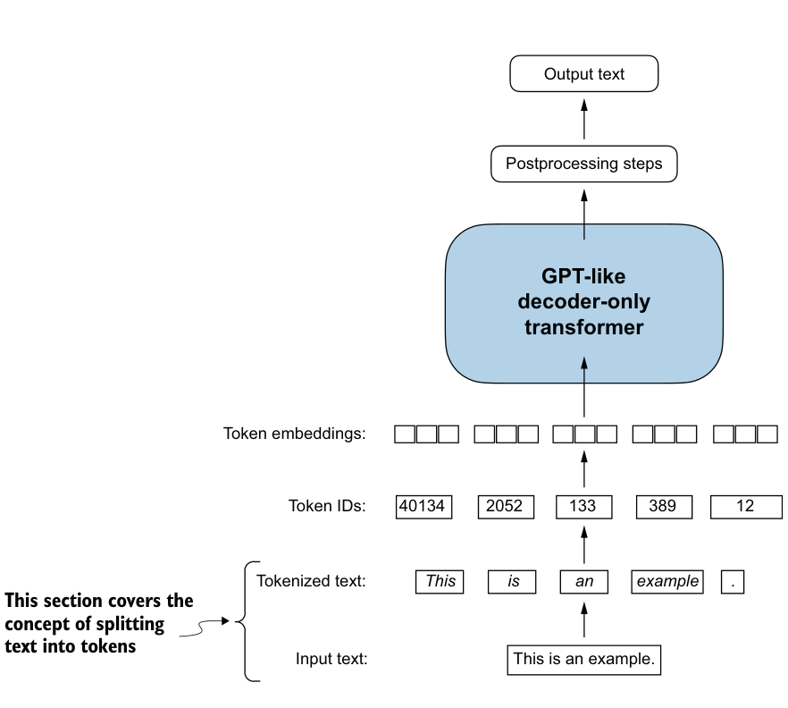
2.2 Tokenizing text#
Let’s discuss how we split input text into individual tokens, a required preprocessing step for creating embeddings for an LLM. These tokens are either individual words or special characters, including punctuation characters, as shown in figure 2.4.
The text we will tokenize for LLM training is “The Verdict,” a short story by Edith Wharton, which has been released into the public domain and is thus permitted to be used for LLM training tasks. The text is available on Wikisource at https://en.wikisource .org/wiki/The_Verdict, and you can copy and paste it into a text file, which I copied
into a text file "the-verdict.txt".
Alternatively, you can find this "the-verdict.txt" file in this book’s GitHub repository at https://mng.bz/Adng. You can download the file with the following Python code:
Listing 2.1Reading in a short story as text sample into Python
import urllib.request
url = ("https://raw.githubusercontent.com/rasbt/"
"LLMs-from-scratch/main/ch02/01_main-chapter-code/"
"the-verdict.txt")
file_path = "the-verdict.txt"
urllib.request.urlretrieve(url, file_path)Next, we can load the the-verdict.txt file using Python’s standard file reading utilities.
with open("the-verdict.txt", "r", encoding="utf-8") as f:
raw_text = f.read()
print("Total number of character:", len(raw_text))
print(raw_text[:99])The print command prints the total number of characters followed by the first 100 characters of this file for illustration purposes:
Total number of character: 20479
I HAD always thought Jack Gisburn rather a cheap genius--though a good fellow
enough--so it was noOur goal is to tokenize this 20,479-character short story into individual words and special characters that we can then turn into embeddings for LLM training.
How can we best split this text to obtain a list of tokens? For this, we go on a small excursion and use Python’s regular expression library re for illustration purposes. (You don’t have to learn or memorize any regular expression syntax since we will later transition to a prebuilt tokenizer.)
Using some simple example text, we can use the re.split command with the following syntax to split a text on whitespace characters:
import re
text = "Hello, world. This, is a test."
result = re.split(r'(\s)', text)
print(result)The result is a list of individual words, whitespaces, and punctuation characters:
['Hello,', ' ', 'world.', ' ', 'This,', ' ', 'is', ' ', 'a', ' ', 'test.']This simple tokenization scheme mostly works for separating the example text into individual words; however, some words are still connected to punctuation characters that we want to have as separate list entries. We also refrain from making all text lowercase because capitalization helps LLMs distinguish between proper nouns and common nouns, understand sentence structure, and learn to generate text with proper capitalization.
Let’s modify the regular expression splits on whitespaces (\s), commas, and periods ([,.]):
result = re.split(r'([,.]|\s)', text)
print(result)We can see that the words and punctuation characters are now separate list entries just as we wanted:
['Hello', ',', '', ' ', 'world', '.', '', ' ', 'This', ',', '', ' ', 'is',
' ', 'a', ' ', 'test', '.', '']A small remaining problem is that the list still includes whitespace characters. Optionally, we can remove these redundant characters safely as follows:
result = [item for item in result if item.strip()]
print(result)The resulting whitespace-free output looks like as follows:
['Hello', ',', 'world', '.', 'This', ',', 'is', 'a', 'test', '.']
The tokenization scheme we devised here works well on the simple sample text. Let’s modify it a bit further so that it can also handle other types of punctuation, such as question marks, quotation marks, and the double-dashes we have seen earlier in the first 100 characters of Edith Wharton’s short story, along with additional special characters:
text = "Hello, world. Is this-- a test?"
result = re.split(r'([,.:;?_!"()\']|--|\s)', text)
result = [item.strip() for item in result if item.strip()]
print(result)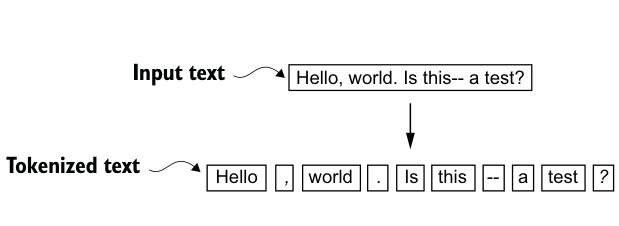
The resulting output is:
['Hello', ',', 'world', '.', 'Is', 'this', '--', 'a', 'test', '?']
As we can see based on the results summarized in figure 2.5, our tokenization scheme can now handle the various special characters in the text successfully.
Now that we have a basic tokenizer working, let’s apply it to Edith Wharton’s entire short story:
preprocessed = re.split(r'([,.:;?_!"()\']|--|\s)', raw_text)
preprocessed = [item.strip() for item in preprocessed if item.strip()]
print(len(preprocessed))This print statement outputs 4690, which is the number of tokens in this text (without whitespaces). Let’s print the first 30 tokens for a quick visual check:
print(preprocessed[:30])The resulting output shows that our tokenizer appears to be handling the text well since all words and special characters are neatly separated:
['I', 'HAD', 'always', 'thought', 'Jack', 'Gisburn', 'rather', 'a',
'cheap', 'genius', '--', 'though', 'a', 'good', 'fellow', 'enough',
'--', 'so', 'it', 'was', 'no', 'great', 'surprise', 'to', 'me', 'to',
'hear', 'that', ',', 'in']2.3 Converting tokens into token IDs#
Next, let’s convert these tokens from a Python string to an integer representation to produce the token IDs. This conversion is an intermediate step before converting the token IDs into embedding vectors.
To map the previously generated tokens into token IDs, we have to build a vocabulary first. This vocabulary defines how we map each unique word and special character to a unique integer, as shown in figure 2.6.
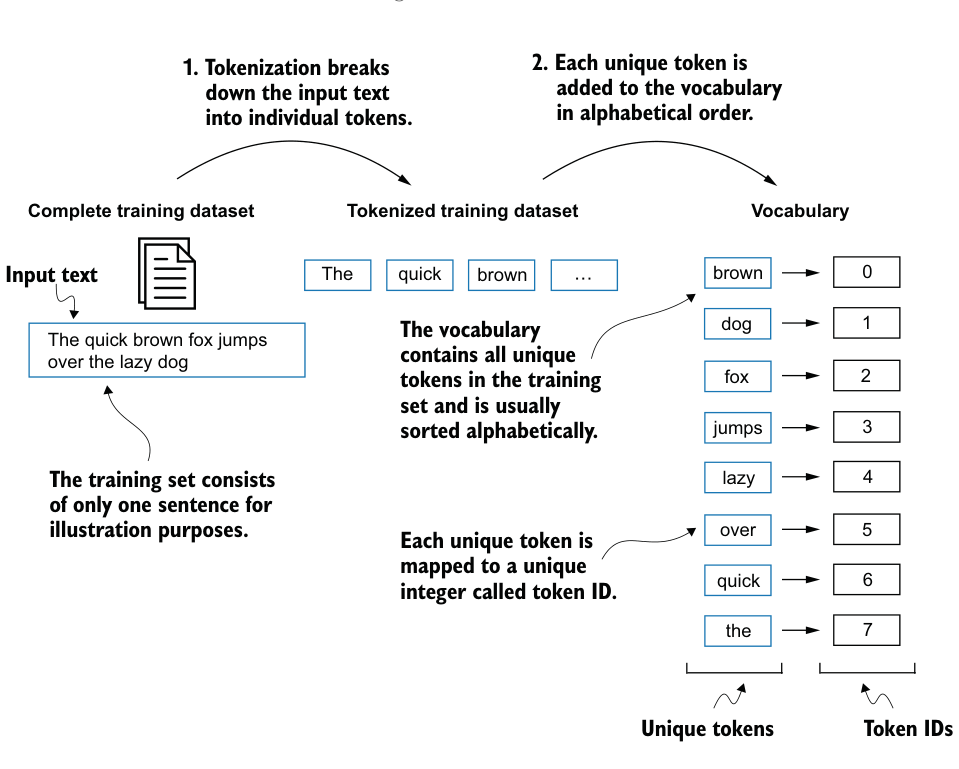
Listing 2.2Creating a vocabulary
Now that we have tokenized Edith Wharton’s short story and assigned it to a Python variable called preprocessed, let’s create a list of all unique tokens and sort them alphabetically to determine the vocabulary size:
all_words = sorted(set(preprocessed))
vocab_size = len(all_words)
print(vocab_size)After determining that the vocabulary size is 1,130 via this code, we create the vocabulary and print its first 51 entries for illustration purposes.
vocab = {token:integer for integer,token in enumerate(all_words)}
for i, item in enumerate(vocab.items()):
print(item)
if i >= 50:
break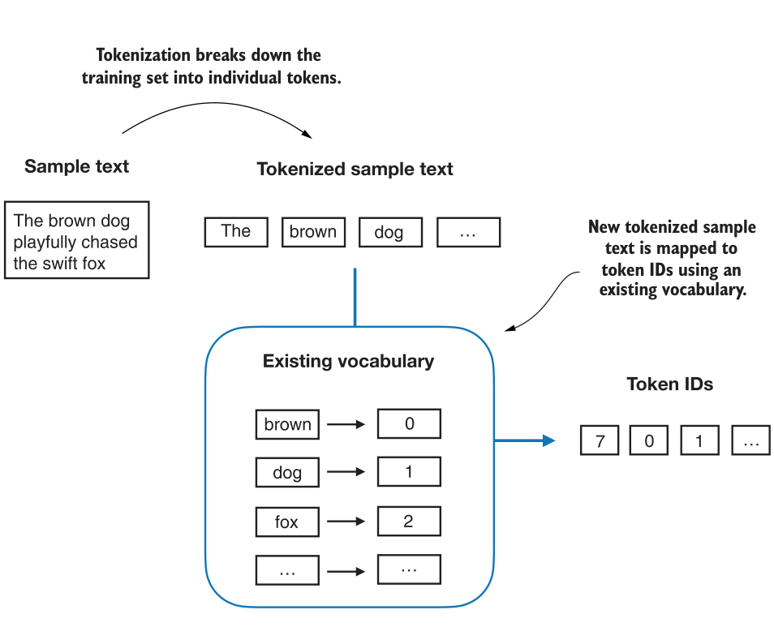
The output is
('!', 0)
('"', 1)
("'", 2)
...
('Her', 49)
('Hermia', 50)As we can see, the dictionary contains individual tokens associated with unique integer labels. Our next goal is to apply this vocabulary to convert new text into token IDs (figure 2.7).
When we want to convert the outputs of an LLM from numbers back into text, we need a way to turn token IDs into text. For this, we can create an inverse version of the vocabulary that maps token IDs back to the corresponding text tokens.
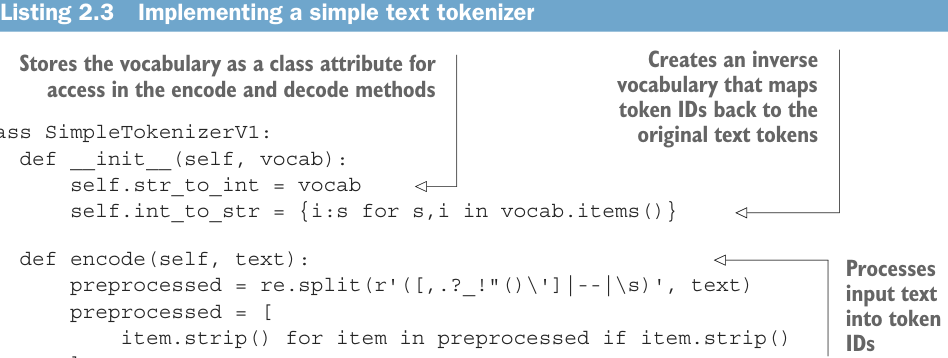
Listing 2.3Implementing a simple text tokenizer
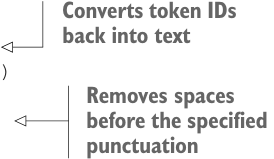
Let’s implement a complete tokenizer class in Python with an encode method that splits text into tokens and carries out the string-to-integer mapping to produce token IDs via the vocabulary. In addition, we’ll implement a decode method that carries out the reverse integer-to-string mapping to convert the token IDs back into text. The following listing shows the code for this tokenizer implementation.
代码旁注 3 条
- vocabulary that mapsCreates an inverse
- Stores the vocabulary as a class attribute for access in the encode and decode methods token IDs back to the original text tokens
- Processes input text into token IDs
class SimpleTokenizerV1:
def __init__(self, vocab):
self.str_to_int = vocab
self.int_to_str = {i:s for s,i in vocab.items()}
def encode(self, text):
preprocessed = re.split(r'([,.?_!"()\']|--|\s)', text)
preprocessed = [
item.strip() for item in preprocessed if item.strip()
]
ids = [self.str_to_int[s] for s in preprocessed]
return ids代码旁注 2 条
- Converts token IDs back into text
- Removes spaces before the specified punctuation
def decode(self, ids):
text = " ".join([self.int_to_str[i] for i in ids])
text = re.sub(r'\s+([,.?!"()\'])', r'\1', text)
return textUsing the SimpleTokenizerV1 Python class, we can now instantiate new tokenizer objects via an existing vocabulary, which we can then use to encode and decode text, as illustrated in figure 2.8.
Let’s instantiate a new tokenizer object from the SimpleTokenizerV1 class and tokenize a passage from Edith Wharton’s short story to try it out in practice:
tokenizer = SimpleTokenizerV1(vocab)
text = """"It's the last he painted, you know,"
Mrs. Gisburn said with pardonable pride."""
ids = tokenizer.encode(text)
print(ids)The preceding code prints the following token IDs:
[1, 56, 2, 850, 988, 602, 533, 746, 5, 1126, 596, 5, 1, 67, 7, 38, 851, 1108,
754, 793, 7]Next, let’s see whether we can turn these token IDs back into text using the decode method:
print(tokenizer.decode(ids))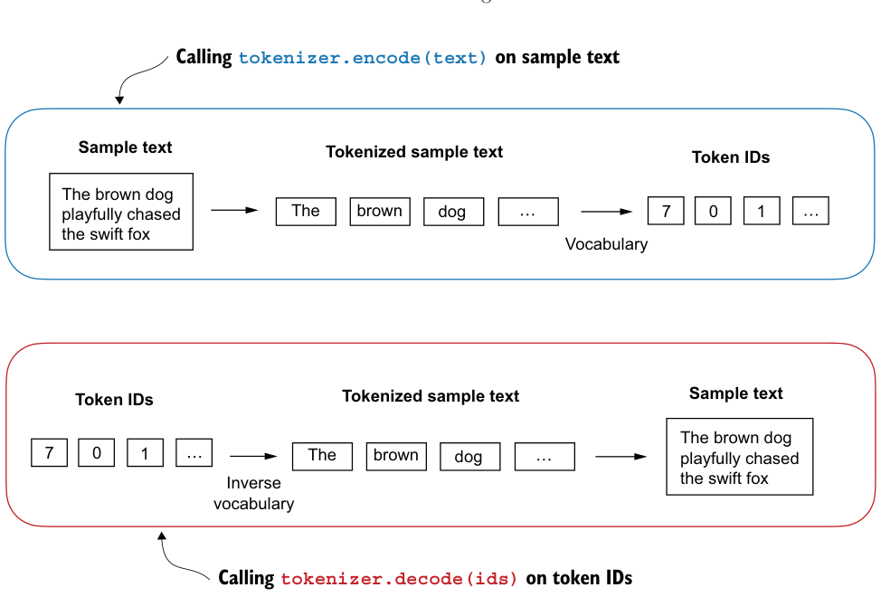
This outputs:
'" It\' s the last he painted, you know," Mrs. Gisburn said with
pardonable pride.'Based on this output, we can see that the decode method successfully converted the token IDs back into the original text.
So far, so good. We implemented a tokenizer capable of tokenizing and detokenizing text based on a snippet from the training set. Let’s now apply it to a new text sample not contained in the training set:
text = "Hello, do you like tea?"
print(tokenizer.encode(text))Executing this code will result in the following error:
KeyError: 'Hello'The problem is that the word “Hello” was not used in the “The Verdict” short story. Hence, it is not contained in the vocabulary. This highlights the need to consider large and diverse training sets to extend the vocabulary when working on LLMs.
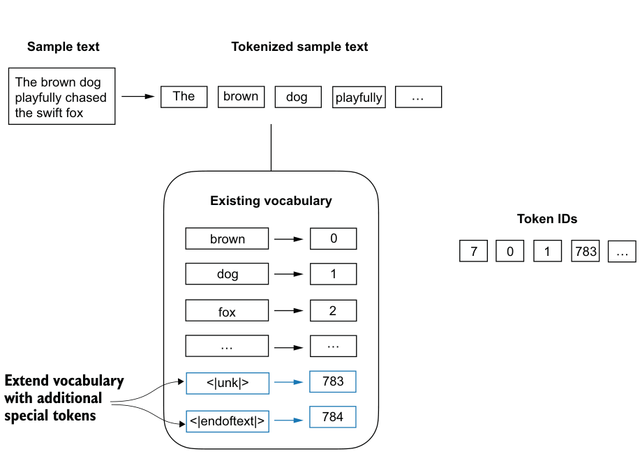
Next, we will test the tokenizer further on text that contains unknown words and discuss additional special tokens that can be used to provide further context for an LLM during training.
2.4 Adding special context tokens#
We need to modify the tokenizer to handle unknown words. We also need to address the usage and addition of special context tokens that can enhance a model’s understanding of context or other relevant information in the text. These special tokens can include markers for unknown words and document boundaries, for example. In particular, we will modify the vocabulary and tokenizer, SimpleTokenizerV2, to support two new tokens, <|unk|> and <|endoftext|>, as illustrated in figure 2.9.
We can modify the tokenizer to use an <|unk|> token if it encounters a word that is not part of the vocabulary. Furthermore, we add a token between unrelated texts. For example, when training GPT-like LLMs on multiple independent documents or books, it is common to insert a token before each document or book that follows a previous text source, as illustrated in figure 2.10. This helps the LLM understand that although these text sources are concatenated for training, they are, in fact, unrelated.
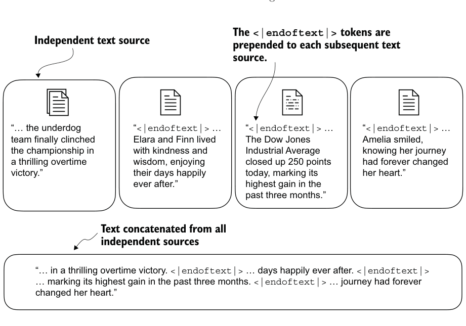
Let’s now modify the vocabulary to include these two special tokens, <unk> and <|endoftext|>, by adding them to our list of all unique words:
all_tokens = sorted(list(set(preprocessed)))
all_tokens.extend(["<|endoftext|>", "<|unk|>"])
vocab = {token:integer for integer,token in enumerate(all_tokens)}
print(len(vocab.items()))Based on the output of this print statement, the new vocabulary size is 1,132 (the previous vocabulary size was 1,130).
As an additional quick check, let’s print the last five entries of the updated vocabulary:
for i, item in enumerate(list(vocab.items())[-5:]):
print(item)The code prints
('younger', 1127)
('your', 1128)
('yourself', 1129)
('<|endoftext|>', 1130)
('<|unk|>', 1131)Listing 2.4A simple text tokenizer that handles unknown words
Based on the code output, we can confirm that the two new special tokens were indeed successfully incorporated into the vocabulary. Next, we adjust the tokenizer from code listing 2.3 accordingly as shown in the following listing.
代码旁注 3 条
- Replaces
- unknown words by <|unk|> tokens
- Replaces spaces before the specified
class SimpleTokenizerV2:
def __init__(self, vocab):
self.str_to_int = vocab
self.int_to_str = { i:s for s,i in vocab.items()}
def encode(self, text):
preprocessed = re.split(r'([,.:;?_!"()\']|--|\s)', text)
preprocessed = [
item.strip() for item in preprocessed if item.strip()
]
preprocessed = [item if item in self.str_to_int
else "<|unk|>" for item in preprocessed]
ids = [self.str_to_int[s] for s in preprocessed]
return ids
def decode(self, ids):
text = " ".join([self.int_to_str[i] for i in ids])
text = re.sub(r'\s+([,.:;?!"()\'])', r'\1', text) punctuations
return textCompared to the SimpleTokenizerV1 we implemented in listing 2.3, the new Simple- TokenizerV2 replaces unknown words with <|unk|> tokens.
Let’s now try this new tokenizer out in practice. For this, we will use a simple text sample that we concatenate from two independent and unrelated sentences:
text1 = "Hello, do you like tea?"
text2 = "In the sunlit terraces of the palace."
text = " <|endoftext|> ".join((text1, text2))
print(text)The output is
Hello, do you like tea? <|endoftext|> In the sunlit terraces of
the palace.Next, let’s tokenize the sample text using the SimpleTokenizerV2 on the vocab we previously created in listing 2.2:
tokenizer = SimpleTokenizerV2(vocab)
print(tokenizer.encode(text))-
[BOS](beginning of sequence)—This token marks the start of a text. It signifies to the LLM where a piece of content begins. -
[EOS](end of sequence)—This token is positioned at the end of a text and is especially useful when concatenating multiple unrelated texts, similar to<|endoftext|>. For instance, when combining two different Wikipedia articles or books, the[EOS]token indicates where one ends and the next begins. -
[PAD](padding)—When training LLMs with batch sizes larger than one, the batch might contain texts of varying lengths. To ensure all texts have the same length, the shorter texts are extended or “padded” using the[PAD]token, up to the length of the longest text in the batch. The tokenizer used for GPT models does not need any of these tokens; it only uses an<|endoftext|>token for simplicity.<|endoftext|>is analogous to the[EOS]token.<|endoftext|>is also used for padding. However, as we’ll explore in subsequent chapters, when training on batched inputs, we typically use a mask, meaning we don’t attend to padded tokens. Thus, the specific token chosen for padding becomes inconsequential. Moreover, the tokenizer used for GPT models also doesn’t use an<|unk|>token for out-of-vocabulary words. Instead, GPT models use a byte pair encoding tokenizer, which breaks words down into subword units, which we will discuss next.
This prints the following token IDs:
[1131, 5, 355, 1126, 628, 975, 10, 1130, 55, 988, 956, 984, 722, 988, 1131, 7]
We can see that the list of token IDs contains 1130 for the <|endoftext|> separator token as well as two 1131 tokens, which are used for unknown words.
Let’s detokenize the text for a quick sanity check:
print(tokenizer.decode(tokenizer.encode(text)))The output is
<|unk|>, do you like tea? <|endoftext|> In the sunlit terraces of
the <|unk|>.Based on comparing this detokenized text with the original input text, we know that the training dataset, Edith Wharton’s short story “The Verdict,” does not contain the words “Hello” and “palace.”
Depending on the LLM, some researchers also consider additional special tokens such as the following:
2.5 Byte pair encoding#
Let’s look at a more sophisticated tokenization scheme based on a concept called byte pair encoding (BPE). The BPE tokenizer was used to train LLMs such as GPT-2, GPT-3, and the original model used in ChatGPT.
Since implementing BPE can be relatively complicated, we will use an existing Python open source library called tiktoken (https://github.com/openai/tiktoken), which implements the BPE algorithm very efficiently based on source code in Rust. Similar to other Python libraries, we can install the tiktoken library via Python’s pip installer from the terminal:
pip install tiktokenThe code we will use is based on tiktoken 0.7.0. You can use the following code to check the version you currently have installed:
from importlib.metadata import version
import tiktoken
print("tiktoken version:", version("tiktoken"))Once installed, we can instantiate the BPE tokenizer from tiktoken as follows:
tokenizer = tiktoken.get_encoding("gpt2")The usage of this tokenizer is similar to the SimpleTokenizerV2 we implemented previously via an encode method:
text = (
"Hello, do you like tea? <|endoftext|> In the sunlit terraces"
"of someunknownPlace."
)
integers = tokenizer.encode(text, allowed_special={"<|endoftext|>"})
print(integers)The code prints the following token IDs:
[15496, 11, 466, 345, 588, 8887, 30, 220, 50256, 554, 262, 4252, 18250,
8812, 2114, 286, 617, 34680, 27271, 13]We can then convert the token IDs back into text using the decode method, similar to
our SimpleTokenizerV2:
strings = tokenizer.decode(integers)
print(strings)The code prints
Hello, do you like tea? <|endoftext|> In the sunlit terraces of
someunknownPlace.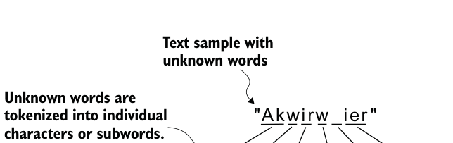
We can make two noteworthy observations based on the token IDs and decoded text. First, the <|endoftext|> token is assigned a relatively large token ID, namely, 50256. In fact, the BPE tokenizer, which was used to train models such as GPT-2, GPT-3, and the original model used in ChatGPT, has a total vocabulary size of 50,257, with <|endoftext|> being assigned the largest token ID.
Second, the BPE tokenizer encodes and decodes unknown words, such as someunknownPlace, correctly. The BPE tokenizer can handle any unknown word. How does it achieve this without using <|unk|> tokens?
The algorithm underlying BPE breaks down words that aren’t in its predefined vocabulary into smaller subword units or even individual characters, enabling it to handle out-of-vocabulary words. So, thanks to the BPE algorithm, if the tokenizer encounters an unfamiliar word during tokenization, it can represent it as a sequence of subword tokens or characters, as illustrated in figure 2.11.
"Akwirw
ier "
break down unknown words into subwords and individual characters. This way, a BPE tokenizer can parse any word and doesn’t need to replace unknown words with special tokens, such as <|unk|>.
The ability to break down unknown words into individual characters ensures that the tokenizer and, consequently, the LLM that is trained with it can process any text, even if it contains words that were not present in its training data.
Exercise 2.1 Byte pair encoding of unknown words #
Try the BPE tokenizer from the tiktoken library on the unknown words “Akwirw ier” and
print the individual token IDs. Then, call the decode function on each of the resulting
integers in this list to reproduce the mapping shown in figure 2.11. Lastly, call the
decode method on the token IDs to check whether it can reconstruct the original
input, “Akwirw ier.”
A detailed discussion and implementation of BPE is out of the scope of this book, but in short, it builds its vocabulary by iteratively merging frequent characters into subwords and frequent subwords into words. For example, BPE starts with adding all individual single characters to its vocabulary (“a,” “b,” etc.). In the next stage, it merges character combinations that frequently occur together into subwords. For example, “d” and “e” may be merged into the subword “de,” which is common in many English
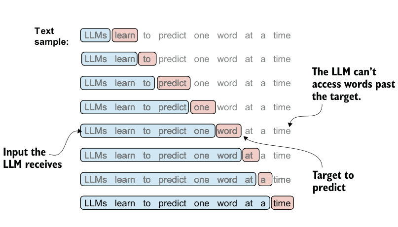
words like “define,” “depend,” “made,” and “hidden.” The merges are determined by a frequency cutoff.
2.6 Data sampling with a sliding window#
The next step in creating the embeddings for the LLM is to generate the input–target pairs required for training an LLM. What do these input–target pairs look like? As we already learned, LLMs are pretrained by predicting the next word in a text, as depicted in figure 2.12.
Let’s implement a data loader that fetches the input–target pairs in figure 2.12 from the training dataset using a sliding window approach. To get started, we will tokenize the whole “The Verdict” short story using the BPE tokenizer:
with open("the-verdict.txt", "r", encoding="utf-8") as f:
raw_text = f.read()
enc_text = tokenizer.encode(raw_text)
print(len(enc_text))Executing this code will return 5145, the total number of tokens in the training set, after applying the BPE tokenizer.
Next, we remove the first 50 tokens from the dataset for demonstration purposes, as it results in a slightly more interesting text passage in the next steps:
enc_sample = enc_text[50:]One of the easiest and most intuitive ways to create the input–target pairs for the nextword prediction task is to create two variables, x and y, where x contains the input tokens and y contains the targets, which are the inputs shifted by 1:
代码旁注 1 条
- The context size determines how many tokens are included in the input.
context_size = 4
x = enc_sample[:context_size]
y = enc_sample[1:context_size+1]
print(f"x: {x}")
print(f"y: {y}")Running the previous code prints the following output:
x: [290, 4920, 2241, 287]
y: [4920, 2241, 287, 257]By processing the inputs along with the targets, which are the inputs shifted by one position, we can create the next-word prediction tasks (see figure 2.12), as follows:
for i in range(1, context_size+1):
context = enc_sample[:i]
desired = enc_sample[i]
print(context, "---->", desired)The code prints
[290] ----> 4920
[290, 4920] ----> 2241
[290, 4920, 2241] ----> 287
[290, 4920, 2241, 287] ----> 257Everything left of the arrow (---->) refers to the input an LLM would receive, and the token ID on the right side of the arrow represents the target token ID that the LLM is supposed to predict. Let’s repeat the previous code but convert the token IDs into text:
for i in range(1, context_size+1):
context = enc_sample[:i]
desired = enc_sample[i]
print(tokenizer.decode(context), "---->", tokenizer.decode([desired]))The following outputs show how the input and outputs look in text format:
and ----> established
and established ----> himself
and established himself ----> in
and established himself in ----> aWe’ve now created the input–target pairs that we can use for LLM training.
There’s only one more task before we can turn the tokens into embeddings: implementing an efficient data loader that iterates over the input dataset and returns the
| LLM to predict, as depicted in figure 2.13. While the figure shows the tokens in stringformat for illustration purposes, the code implementation will operate on token IDs | |||||
directly since the encode method of the BPE tokenizer performs both tokenizationand conversion into token IDs as a single step. | |||||
| Sample text | |||||
| "In the heart of the city stood the old library, a relic from a bygone era. Its | |||||
stone walls bore the marks of time, and ivy clung tightly to its facade …"x = tensor([[ "In", "the", "heart", "of" ], | |||||
| Tensorcontainingthe inputs | [ "the" , "city", "stood", "the" ],[ "old", "library", ",", "a" ],[ … | ]]) | |||
| Tensorcontainingthe targets | y = tensor([[ "the", "heart", "of", "the" ], | [ "city", "stood", "the", "old" ],[ "library", “,",[ … | “a", | “relic"], | ]]) |
Listing 2.5A dataset for batched inputs and targets
inputs and targets as PyTorch tensors, which can be thought of as multidimensional arrays. In particular, we are interested in returning two tensors: an input tensor containing the text that the LLM sees and a target tensor that includes the targets for the
Figure 2.13 To implement efficient data loaders, we collect the inputs in a tensor, x, where each row represents one input context. A second tensor, y, contains the corresponding prediction targets (next words), which are created by shifting the input by one position.
The code for the dataset class is shown in the following listing.
代码旁注 1 条
- Tokenizes the entire text
import torch
from torch.utils.data import Dataset, DataLoader
class GPTDatasetV1(Dataset):
def __init__(self, txt, tokenizer, max_length, stride):
self.input_ids = []
self.target_ids = []
token_ids = tokenizer.encode(txt)Listing 2.6A data loader to generate batches with input-with pairs
代码旁注 2 条
- Returns a single row from the dataset Uses a sliding window to chunk the book into overlapping sequences of max_length
- Returns the total number of rows in the dataset
for i in range(0, len(token_ids) - max_length, stride):
input_chunk = token_ids[i:i + max_length]
target_chunk = token_ids[i + 1: i + max_length + 1]
self.input_ids.append(torch.tensor(input_chunk))
self.target_ids.append(torch.tensor(target_chunk))
def __len__(self):
return len(self.input_ids)
def __getitem__(self, idx):
return self.input_ids[idx], self.target_ids[idx]The GPTDatasetV1 class is based on the PyTorch Dataset class and defines how individual rows are fetched from the dataset, where each row consists of a number of token IDs (based on a max_length) assigned to an input_chunk tensor. The target_ chunk tensor contains the corresponding targets. I recommend reading on to see what the data returned from this dataset looks like when we combine the dataset with a PyTorch DataLoader—this will bring additional intuition and clarity.
The following code uses the GPTDatasetV1 to load the inputs in batches via a PyTorch
DataLoader.代码旁注 4 条
- Initializes the tokenizer
- Creates dataset
- drop_last=True drops the last batch if it is shorter than the specified batch_size to prevent loss spikes during training.
- The number of CPU processes to use for preprocessing
def create_dataloader_v1(txt, batch_size=4, max_length=256,
stride=128, shuffle=True, drop_last=True,
num_workers=0):
tokenizer = tiktoken.get_encoding("gpt2")
dataset = GPTDatasetV1(txt, tokenizer, max_length, stride)
dataloader = DataLoader(
dataset,
batch_size=batch_size,
shuffle=shuffle,
drop_last=drop_last,
num_workers=num_workers
)
return dataloaderLet’s test the dataloader with a batch size of 1 for an LLM with a context size of 4 to develop an intuition of how the GPTDatasetV1 class from listing 2.5 and the create_ dataloader_v1 function from listing 2.6 work together:
代码旁注 1 条
- Converts dataloader into a Python iterator to fetch the next entry via Python’s built-in next() function
with open("the-verdict.txt", "r", encoding="utf-8") as f:
raw_text = f.read()
dataloader = create_dataloader_v1(
raw_text, batch_size=1, max_length=4, stride=1, shuffle=False)
data_iter = iter(dataloader)
first_batch = next(data_iter)
print(first_batch)Executing the preceding code prints the following:
[tensor([[ 40, 367, 2885, 1464]]), tensor([[ 367, 2885, 1464, 1807]])]The first_batch variable contains two tensors: the first tensor stores the input token IDs, and the second tensor stores the target token IDs. Since the max_length is set to 4, each of the two tensors contains four token IDs. Note that an input size of 4 is quite small and only chosen for simplicity. It is common to train LLMs with input sizes of at least 256.
To understand the meaning of stride=1, let’s fetch another batch from this dataset:
second_batch = next(data_iter)
print(second_batch)The second batch has the following contents:
[tensor([[ 367, 2885, 1464, 1807]]), tensor([[2885, 1464, 1807, 3619]])]If we compare the first and second batches, we can see that the second batch’s token IDs are shifted by one position (for example, the second ID in the first batch’s input is 367, which is the first ID of the second batch’s input). The stride setting dictates the number of positions the inputs shift across batches, emulating a sliding window approach, as demonstrated in figure 2.14.
Exercise 2.2 Data loaders with different strides and context sizes#
To develop more intuition for how the data loader works, try to run it with different
settings such as max_length=2 and stride=2, and max_length=8 and stride=2.Batch sizes of 1, such as we have sampled from the data loader so far, are useful for illustration purposes. If you have previous experience with deep learning, you may know that small batch sizes require less memory during training but lead to more
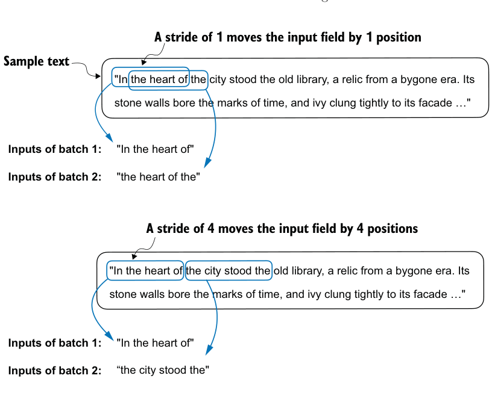
noisy model updates. Just like in regular deep learning, the batch size is a tradeoff and a hyperparameter to experiment with when training LLMs.
Let’s look briefly at how we can use the data loader to sample with a batch size greater than 1:
dataloader = create_dataloader_v1(
raw_text, batch_size=8, max_length=4, stride=4,
shuffle=False
)
data_iter = iter(dataloader)
inputs, targets = next(data_iter)
print("Inputs:\n", inputs)
print("\nTargets:\n", targets)This prints
Inputs:
tensor([[ 40, 367, 2885, 1464],
[ 1807, 3619, 402, 271],
[10899, 2138, 257, 7026],
[15632, 438, 2016, 257],
[ 922, 5891, 1576, 438],
[ 568, 340, 373, 645],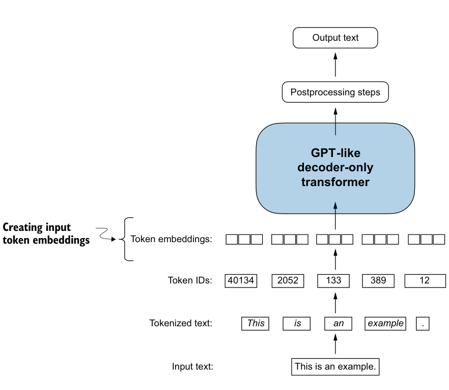
[ 1049, 5975, 284, 502],
[ 284, 3285, 326, 11]])
Targets:
tensor([[ 367, 2885, 1464, 1807],
[ 3619, 402, 271, 10899],
[ 2138, 257, 7026, 15632],
[ 438, 2016, 257, 922],
[ 5891, 1576, 438, 568],
[ 340, 373, 645, 1049],
[ 5975, 284, 502, 284],
[ 3285, 326, 11, 287]])Note that we increase the stride to 4 to utilize the data set fully (we don’t skip a single word). This avoids any overlap between the batches since more overlap could lead to increased overfitting.
2.7 Creating token embeddings#
The last step in preparing the input text for LLM training is to convert the token IDs into embedding vectors, as shown in figure 2.15. As a preliminary step, we must initialize
these embedding weights with random values. This initialization serves as the starting point for the LLM’s learning process. In chapter 5, we will optimize the embedding weights as part of the LLM training.
A continuous vector representation, or embedding, is necessary since GPT-like LLMs are deep neural networks trained with the backpropagation algorithm.
Let’s see how the token ID to embedding vector conversion works with a hands-on example. Suppose we have the following four input tokens with IDs 2, 3, 5, and 1:
input_ids = torch.tensor([2, 3, 5, 1])For the sake of simplicity, suppose we have a small vocabulary of only 6 words (instead of the 50,257 words in the BPE tokenizer vocabulary), and we want to create embeddings of size 3 (in GPT-3, the embedding size is 12,288 dimensions):
vocab_size = 6
output_dim = 3Using the vocab_size and output_dim, we can instantiate an embedding layer in PyTorch, setting the random seed to 123 for reproducibility purposes:
torch.manual_seed(123)
embedding_layer = torch.nn.Embedding(vocab_size, output_dim)
print(embedding_layer.weight)The print statement prints the embedding layer’s underlying weight matrix:
Parameter containing:
tensor([[ 0.3374, -0.1778, -0.1690],
[ 0.9178, 1.5810, 1.3010],
[ 1.2753, -0.2010, -0.1606],
[-0.4015, 0.9666, -1.1481],
[-1.1589, 0.3255, -0.6315],
[-2.8400, -0.7849, -1.4096]], requires_grad=True)The weight matrix of the embedding layer contains small, random values. These values are optimized during LLM training as part of the LLM optimization itself. Moreover, we can see that the weight matrix has six rows and three columns. There is one row for each of the six possible tokens in the vocabulary, and there is one column for each of the three embedding dimensions.
Now, let’s apply it to a token ID to obtain the embedding vector:
print(embedding_layer(torch.tensor([3])))The returned embedding vector is
tensor([[-0.4015, 0.9666, -1.1481]], grad_fn=<EmbeddingBackward0>)
If we compare the embedding vector for token ID 3 to the previous embedding matrix, we see that it is identical to the fourth row (Python starts with a zero index, so it’s the row corresponding to index 3). In other words, the embedding layer is essentially a lookup operation that retrieves rows from the embedding layer’s weight matrix via a token ID.
We’ve seen how to convert a single token ID into a three-dimensional embedding vector. Let’s now apply that to all four input IDs (torch.tensor([2, 3, 5, 1])):
print(embedding_layer(input_ids))The print output reveals that this results in a 4 × 3 matrix:
tensor([[ 1.2753, -0.2010, -0.1606],
[-0.4015, 0.9666, -1.1481],
[-2.8400, -0.7849, -1.4096],
[ 0.9178, 1.5810, 1.3010]], grad_fn=<EmbeddingBackward0>)Each row in this output matrix is obtained via a lookup operation from the embedding weight matrix, as illustrated in figure 2.16.
Having now created embedding vectors from token IDs, next we’ll add a small modification to these embedding vectors to encode positional information about a token within a text.
2.8 Encoding word positions#
In principle, token embeddings are a suitable input for an LLM. However, a minor shortcoming of LLMs is that their self-attention mechanism (see chapter 3) doesn’t have a notion of position or order for the tokens within a sequence. The way the previously introduced embedding layer works is that the same token ID always gets mapped to the same vector representation, regardless of where the token ID is positioned in the input sequence, as shown in figure 2.17.
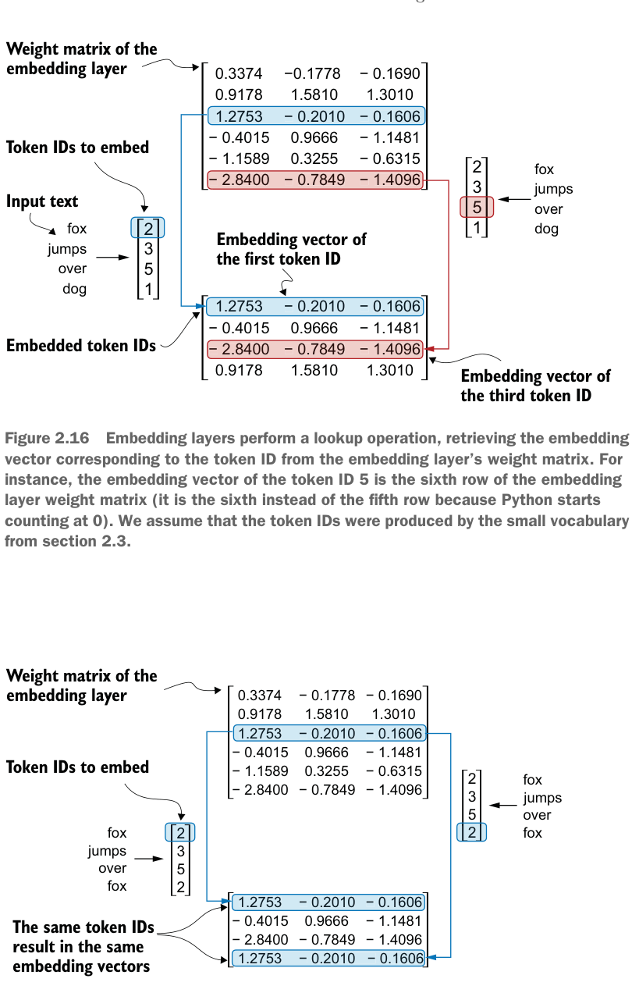
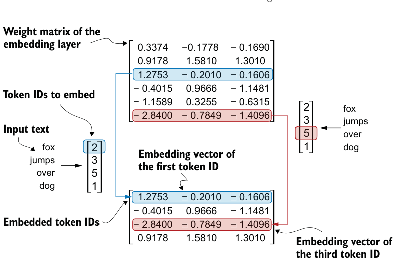
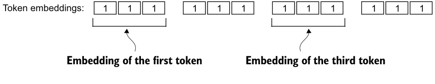
In principle, the deterministic, position-independent embedding of the token ID is good for reproducibility purposes. However, since the self-attention mechanism of LLMs itself is also position-agnostic, it is helpful to inject additional position information into the LLM.
To achieve this, we can use two broad categories of position-aware embeddings: relative positional embeddings and absolute positional embeddings. Absolute positional embeddings are directly associated with specific positions in a sequence. For each position in the input sequence, a unique embedding is added to the token’s embedding to convey its exact location. For instance, the first token will have a specific positional embedding, the second token another distinct embedding, and so on, as illustrated in figure 2.18.
+
+
+
+
Instead of focusing on the absolute position of a token, the emphasis of relative positional embeddings is on the relative position or distance between tokens. This means the model learns the relationships in terms of “how far apart” rather than “at which exact position.” The advantage here is that the model can generalize better to sequences of varying lengths, even if it hasn’t seen such lengths during training.
Both types of positional embeddings aim to augment the capacity of LLMs to understand the order and relationships between tokens, ensuring more accurate and context-aware predictions. The choice between them often depends on the specific application and the nature of the data being processed.
OpenAI’s GPT models use absolute positional embeddings that are optimized during the training process rather than being fixed or predefined like the positional encodings in the original transformer model. This optimization process is part of the model training itself. For now, let’s create the initial positional embeddings to create the LLM inputs.
Previously, we focused on very small embedding sizes for simplicity. Now, let’s consider more realistic and useful embedding sizes and encode the input tokens into a 256-dimensional vector representation, which is smaller than what the original GPT-3 model used (in GPT-3, the embedding size is 12,288 dimensions) but still reasonable for experimentation. Furthermore, we assume that the token IDs were created by the BPE tokenizer we implemented earlier, which has a vocabulary size of 50,257:
vocab_size = 50257
output_dim = 256
token_embedding_layer = torch.nn.Embedding(vocab_size, output_dim)Using the previous token_embedding_layer, if we sample data from the data loader, we embed each token in each batch into a 256-dimensional vector. If we have a batch size of 8 with four tokens each, the result will be an 8 × 4 × 256 tensor.
Let’s instantiate the data loader (see section 2.6) first:
max_length = 4
dataloader = create_dataloader_v1(
raw_text, batch_size=8, max_length=max_length,
stride=max_length, shuffle=False
)
data_iter = iter(dataloader)
inputs, targets = next(data_iter)
print("Token IDs:\n", inputs)
print("\nInputs shape:\n", inputs.shape)This code prints
Token IDs:
tensor([[ 40, 367, 2885, 1464],
[ 1807, 3619, 402, 271],
[10899, 2138, 257, 7026],
[15632, 438, 2016, 257],
[ 922, 5891, 1576, 438],
[ 568, 340, 373, 645],
[ 1049, 5975, 284, 502],
[ 284, 3285, 326, 11]])
Inputs shape:
torch.Size([8, 4])As we can see, the token ID tensor is 8 × 4 dimensional, meaning that the data batch consists of eight text samples with four tokens each.
Let’s now use the embedding layer to embed these token IDs into 256-dimensional vectors:
token_embeddings = token_embedding_layer(inputs)
print(token_embeddings.shape)The print function call returns
torch.Size([8, 4, 256])
The 8 × 4 × 256–dimensional tensor output shows that each token ID is now embedded as a 256-dimensional vector.
For a GPT model’s absolute embedding approach, we just need to create another embedding layer that has the same embedding dimension as the token_embedding_
layer:
context_length = max_length
pos_embedding_layer = torch.nn.Embedding(context_length, output_dim)
pos_embeddings = pos_embedding_layer(torch.arange(context_length))
print(pos_embeddings.shape)The input to the pos_embeddings is usually a placeholder vector torch.arange(context_length), which contains a sequence of numbers 0, 1, ..., up to the maximum input length –1. The context_length is a variable that represents the supported input size of the LLM. Here, we choose it similar to the maximum length of the input text. In practice, input text can be longer than the supported context length, in which case we have to truncate the text.
The output of the print statement is
torch.Size([4, 256])As we can see, the positional embedding tensor consists of four 256-dimensional vectors. We can now add these directly to the token embeddings, where PyTorch will add the 4 × 256–dimensional pos_embeddings tensor to each 4 × 256–dimensional token embedding tensor in each of the eight batches:
input_embeddings = token_embeddings + pos_embeddings
print(input_embeddings.shape)The print output is
torch.Size([8, 4, 256])The input_embeddings we created, as summarized in figure 2.19, are the embedded input examples that can now be processed by the main LLM modules, which we will begin implementing in the next chapter.
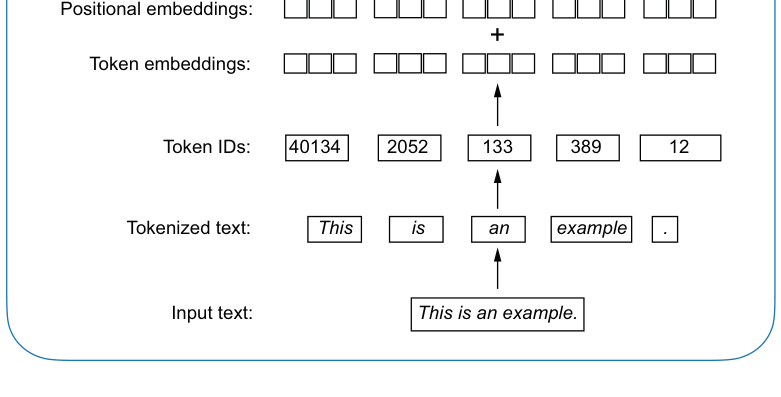
- LLMs require textual data to be converted into numerical vectors, known as embeddings, since they can’t process raw text. Embeddings transform discrete data (like words or images) into continuous vector spaces, making them compatible with neural network operations.
- As the first step, raw text is broken into tokens, which can be words or characters. Then, the tokens are converted into integer representations, termed token IDs.
- Special tokens, such as
<|unk|>and<|endoftext|>, can be added to enhance the model’s understanding and handle various contexts, such as unknown words or marking the boundary between unrelated texts.
decoder-onlyGPT-like
transformer
+
Figure 2.19 As part of the input processing pipeline, input text is first broken up into individual tokens. These tokens are then converted into token IDs using a vocabulary. The token IDs are converted into embedding vectors to which positional embeddings of a similar size are added, resulting in input embeddings that are used as input for the main LLM layers.
Summary#
- The byte pair encoding (BPE) tokenizer used for LLMs like GPT-2 and GPT-3 can efficiently handle unknown words by breaking them down into subword units or individual characters.
- We use a sliding window approach on tokenized data to generate input–target pairs for LLM training.
- Embedding layers in PyTorch function as a lookup operation, retrieving vectors corresponding to token IDs. The resulting embedding vectors provide continuous representations of tokens, which is crucial for training deep learning models like LLMs.
- While token embeddings provide consistent vector representations for each token, they lack a sense of the token’s position in a sequence. To rectify this, two main types of positional embeddings exist: absolute and relative. OpenAI’s GPT models utilize absolute positional embeddings, which are added to the token embedding vectors and are optimized during the model training.
- The reasons for using attention mechanisms in neural networks
- A basic self-attention framework, progressing to an enhanced self-attention mechanism
- A causal attention module that allows LLMs to generate one token at a time
- Masking randomly selected attention weights with dropout to reduce overfitting
- Stacking multiple causal attention modules into a multi-head attention module
由 pdf2html2.py 从 bllm2.pdf 转换。插图为原书矢量图按区域渲染的截图，代码块带语法高亮，连字符断词已按全书词表还原。